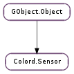

| static | cap_from_string(sensor_cap) |
| static | cap_to_string(sensor_cap) |
| static | error_from_string(error_desc) |
| static | error_quark() |
| static | error_to_string(error_enum) |
| static | kind_from_string(sensor_kind) |
| static | kind_to_string(sensor_kind) |
| static | new() |
| static | new_with_object_path(object_path) |
| static | state_from_string(sensor_state) |
| static | state_to_string(sensor_state) |
| connect(cancellable, callback, *user_data) | |
| connect_finish(res) | |
| connect_sync(cancellable) | |
| equal(sensor2) | |
| get_caps() | |
| get_connected() | |
| get_embedded() | |
| get_id() | |
| get_kind() | |
| get_locked() | |
| get_metadata_item(key) | |
| get_mode() | |
| get_model() | |
| get_native() | |
| get_object_path() | |
| get_option(key) | |
| get_sample(cap, cancellable, callback, *user_data) | |
| get_sample_finish(res) | |
| get_sample_sync(cap, cancellable) | |
| get_serial() | |
| get_state() | |
| get_vendor() | |
| has_cap(cap) | |
| lock(cancellable, callback, *user_data) | |
| lock_finish(res) | |
| lock_sync(cancellable) | |
| set_object_path(object_path) | |
| set_options_finish(res) | |
| to_string() | |
| unlock(cancellable, callback, *user_data) | |
| unlock_finish(res) | |
| unlock_sync(cancellable) |
| Name | Type | Flags | Description |
|---|---|---|---|
| connected | str | r | |
| embedded | str | r | |
| id | str | r | |
| kind | str | r | |
| locked | str | r | |
| mode | str | r | |
| model | str | r | |
| native | str | r | |
| object-path | str | r/w | |
| serial | str | r | |
| state | str | r | |
| vendor | str | r |
| Name | Parameters | Return | Description |
|---|---|---|---|
| button-pressed | The ::button-pressed signal is emitted when the button has been pressed. |
| Name | Type | Access |
|---|---|---|
| parent | GObject.Object | r |
| priv | Colord.SensorPrivate | r |
Bases: GObject.Object
| Parameters: | sensor_cap (str) – the sensor capability, e.g. ‘projector’. |
|---|---|
| Returns: | a Colord.SensorCap |
| Return type: | Colord.SensorCap |
Gets the sensor capability as a enumerated value.
| Parameters: | sensor_cap (Colord.SensorCap) – a Colord.SensorCap |
|---|---|
| Returns: | the sensor capability, e.g. ‘projector’. |
| Return type: | str |
Gets the sensor capability as a string.
| Parameters: | error_desc (str) – |
|---|---|
| Returns: | enumerated value |
| Return type: | Colord.SensorError |
Converts a string to a Colord.SensorError.
| Parameters: | error_enum (Colord.SensorError) – |
|---|---|
| Returns: | identifier string |
| Return type: | str |
Converts a Colord.SensorError to a string.
| Parameters: | sensor_kind (str) – the sensor kind, e.g. ‘huey’. |
|---|---|
| Returns: | a Colord.SensorKind |
| Return type: | Colord.SensorKind |
Gets the sensor kind as a enumerated value.
| Parameters: | sensor_kind (Colord.SensorKind) – a Colord.SensorKind |
|---|---|
| Returns: | the sensor kind, e.g. ‘huey’. |
| Return type: | str |
Gets the sensor kind as a string.
| Returns: | a new Colord.Sensor object. |
|---|---|
| Return type: | Colord.Sensor |
Creates a new Colord.Sensor object.
| Parameters: | object_path (str) – The colord object path. |
|---|---|
| Returns: | a new sensor object. |
| Return type: | Colord.Sensor |
Creates a new Colord.Sensor object with a known object path.
| Parameters: | sensor_state (str) – the sensor stateability, e.g. ‘measuring’. |
|---|---|
| Returns: | a Colord.SensorState |
| Return type: | Colord.SensorState |
Gets the sensor stateability as a enumerated value.
| Parameters: | sensor_state (Colord.SensorState) – a Colord.SensorState |
|---|---|
| Returns: | the sensor stateability, e.g. ‘measuring’. |
| Return type: | str |
Gets the sensor stateability as a string.
| Parameters: |
|
|---|
Connects to the sensor.
| Parameters: | res (Gio.AsyncResult) – the Gio.AsyncResult |
|---|---|
| Raises: | GLib.GError |
| Returns: | True if we could connect to to the sensor |
| Return type: | bool |
Gets the result from the asynchronous function.
| Parameters: | cancellable (Gio.Cancellable or None) – a Gio.Cancellable or None |
|---|---|
| Raises: | GLib.GError |
| Returns: | True for success, else False. |
| Return type: | bool |
Connects to the object and fills up initial properties.
WARNING: This function is synchronous, and may block. Do not use it in GUI applications.
| Parameters: | sensor2 (Colord.Sensor) – another Colord.Sensor instance. |
|---|---|
| Returns: | True if the sensors are the same device |
| Return type: | bool |
Tests two sensors for equality.
| Returns: | True if properties are valid |
|---|---|
| Return type: | bool |
Gets if the sensor has been connected.
| Returns: | True if embedded. |
|---|---|
| Return type: | bool |
Returns if the sensor is embedded into the computer.
| Returns: | A Colord.SensorKind, e.g. Colord.SensorKind.HUEY |
|---|---|
| Return type: | Colord.SensorKind |
Gets the sensor kind.
| Parameters: | key (str) – a key for the metadata dictionary |
|---|---|
| Returns: | the metadata value, or None if not set. |
| Return type: | str |
Returns the sensor metadata for a specific key.
| Returns: | A Colord.SensorCap, e.g. Colord.SensorCap.AMBIENT |
|---|---|
| Return type: | Colord.SensorCap |
Gets the sensor operating mode.
| Returns: | True if VCGT is valid. |
|---|---|
| Return type: | bool |
Returns if the sensor has a native driver.
| Returns: | the object path, or None |
|---|---|
| Return type: | str |
Gets the object path for the sensor.
| Parameters: | key (str) – a key to search for. |
|---|---|
| Returns: | A const string, or None of not found. |
| Return type: | str |
Gets a specific sensor option.
| Parameters: |
|
|---|
Gets a color sample from a sensor
| Parameters: | res (Gio.AsyncResult) – the Gio.AsyncResult |
|---|---|
| Raises: | GLib.GError |
| Returns: | the XYZ reading, or None |
| Return type: | Colord.ColorXYZ |
Gets the result from the asynchronous function.
| Parameters: |
|
|---|---|
| Raises: | |
| Returns: | the XYZ reading, with ambient levels in Lux encoded in X, or None for error. |
| Return type: |
Gets a sample from the sensor.
WARNING: This function is synchronous, and may block. Do not use it in GUI applications.
| Returns: | A Colord.SensorState, e.g. Colord.SensorState.IDLE |
|---|---|
| Return type: | Colord.SensorState |
Gets the sensor state.
| Parameters: | cap (Colord.SensorCap) – a specified capability, e.g. Colord.SensorCap.LCD |
|---|---|
| Returns: | True if the sensor has the specified capability |
| Return type: | bool |
Returns the sensor metadata for a specific key.
| Parameters: |
|
|---|
Locks the device so we can use it.
| Parameters: | res (Gio.AsyncResult) – the Gio.AsyncResult |
|---|---|
| Raises: | GLib.GError |
| Returns: | success |
| Return type: | bool |
Gets the result from the asynchronous function.
| Parameters: | cancellable (Gio.Cancellable or None) – a Gio.Cancellable or None |
|---|---|
| Raises: | GLib.GError |
| Returns: | True for success, else False. |
| Return type: | bool |
Locks the device so we can use it.
WARNING: This function is synchronous, and may block. Do not use it in GUI applications.
| Parameters: | object_path (str) – The colord object path. |
|---|
Sets the object path of the sensor.
| Parameters: | res (Gio.AsyncResult) – the Gio.AsyncResult |
|---|---|
| Raises: | GLib.GError |
| Returns: | success |
| Return type: | bool |
Gets the result from the asynchronous function.
| Parameters: |
|
|---|
Unlocks the sensor for use by other programs.
| Parameters: | res (Gio.AsyncResult) – the Gio.AsyncResult |
|---|---|
| Raises: | GLib.GError |
| Returns: | success |
| Return type: | bool |
Gets the result from the asynchronous function.
| Parameters: | cancellable (Gio.Cancellable or None) – a Gio.Cancellable or None |
|---|---|
| Raises: | GLib.GError |
| Returns: | True for success, else False. |
| Return type: | bool |
Unlocks the device for use by other programs.
WARNING: This function is synchronous, and may block. Do not use it in GUI applications.